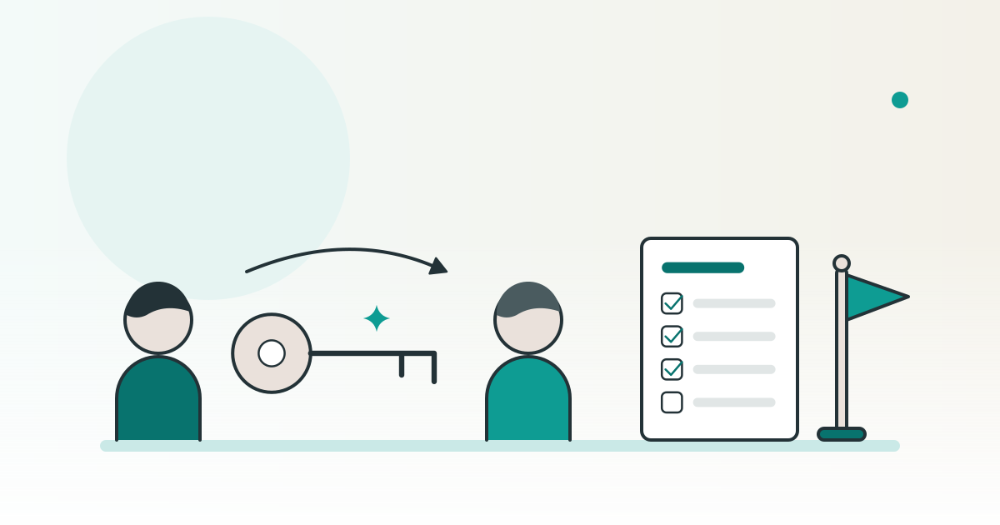

SHOPKIT コラム
個人M&Aの成功をどう考える？買う前の決めごとと引き継いだ後にやること

個人M&Aの成功を考えるなら、買う目的、使える時間、見直す条件を先に言葉にし、引き継いだ後に自分が担う仕事へつなげます。契約を結ぶことと、日々の仕事を引き受けられることを分けて考えましょう。ここでは成功者の統計や体験談ではなく、買う前と買った後に使う作業の整理方法を紹介します。
この記事は、完成品のネットショップを販売している SHOPKIT が書いています。
この記事で分かること
- 買う目的と、続ける・見直す条件の決め方
- 引き継ぎ中に聞くことと、自分でたどる仕事の残し方
- 引き継いだ後に変えるものと、未完了の事項の分け方
「成功」の中身は、自分が続けたい仕事から決める
「事業を買いたい」の次に、その仕事を引き受けて何を続けたいかを書きます。扱いたい商品やサービス、働く場所、関わりたい相手を挙げ、自分が対応できる時間と並べてみましょう。
勤務先のある人なら、勤務中に連絡が必要になる仕事をどう扱うかも考えます。毎日の確認、急な問題の判断、休む日の連絡まで書くと、買う前に質問すべきことが具体的になります。勤務先の規則や手続きは、自分の勤務先へ確かめてください。
続ける条件だけでなく、説明と実際の仕事が違う、必要な資料を受け取れない、自分の生活に収まらない、といった場合に検討を保留する基準も用意します。これは結果を予測する方法ではなく、自分の判断を記録するための整理です。
関連：スモールM&Aとは？会社員が副業で小さく買うときの考え方
買う前に、日々の担当と相談する専門家を決めておく
毎月できる作業を考えるときも、月単位の合計だけでなく、いつ対応を求められるかを聞きます。次の表は、買い手が仕事を引き受ける計画を作るための質問の例です。法令や契約によって必要な手続きは、案件ごとに相談します。
| 仕事の場面 | 前の持ち主に聞くこと | 自分の計画に残すこと |
|---|---|---|
| 日々の対応 | 何を見て、どんな順に判断しているか。 | 自分が行う作業と、説明を受ける作業。 |
| 急な問い合わせ | 通常と違う相談が来たとき、誰へ聞いているか。 | 相談先と、自分だけで決めずに止める内容。 |
| 休みや不在 | 担当者がいない日は、どう案内しているか。 | 受付・返信・作業を休む日の取り決め。 |
| 月ごとの記録 | どの資料を残し、誰が内容を読んでいるか。 | 受け取る記録、保管先、自分が点検する時点。 |
契約、税や会計、許認可などは、同じ相談先ですべて判断できると考えず、質問の種類を分けます。専門家へは、何を調べてもらい、どんな形で説明を受けるかを、依頼前に尋ねてください。
中小機構の事業承継・引継ぎポータルは、第三者への承継を支える公的な窓口や、起業を考える人と後継者を探す側をつなぐ支援を案内しています。相談の入口として利用できます。
出典：中小機構「事業承継・引継ぎポータル」（支援の案内）。
関連：個人で小さな事業を買う方法｜探し方から引き継ぎまでの流れ
引き継ぎ中は、説明を聞く・自分でたどる・残すを一組にする
前の持ち主から話を聞いたら、実際の作業を自分でたどれるかを確かめます。書類や画面の名前を受け取るだけで終わらせず、何をきっかけに作業を始め、何が済んだら終わりかを聞きましょう。
- 仕事を場面で分ける注文や依頼を受ける、商品やサービスを用意する、代金や記録を確かめるなど、普段の流れを聞く。
- 資料と作業を対応させるどの資料や画面を見て判断するか、どこに記録を残すかを聞き、自分でたどる。
- 通常と違う場合を聞く欠品、不具合、連絡が取れない場合など、詰まりそうな場面の相談先を残す。
- 未完了を分ける受け取っていない資料、回答待ちの質問、追加で説明を受ける作業を一覧にする。
取引先やお客様への案内も、案内する相手、伝える内容、時期、担当を分けます。名義や契約について相手の承諾などが要るかは、一律に判断せず、契約案と実際の取引を専門家へ見てもらってください。
連絡先やお客様の情報を、必要な手続きの確認前に移す計画にはしないようにしましょう。どの情報を、何のために、どの方法で受け取るかも相談メモに含めます。
引き継いだ後は、変えるものと残すものを分けて記録する
最初の数か月は、予定と実際の作業のずれを残し、変更する理由を読み直せるようにします。前のやり方をすべて続けるとも、すべて変えるとも決めず、判断の単位を小さくする進め方です。
例えば、問い合わせに答えるための資料が探しにくければ、まず資料の置き場を整理する、といった変更から考えます。一方、商品やサービスの条件を変えるなら、相手との約束や、どの案内を直すかも一緒に検討します。
- 変える内容と、その理由。
- 影響を受ける相手、資料、作業。
- 変更する前に回答をもらう質問。
- 試した後に見直す時点と、元に戻す場合の扱い。
受け取った説明と実際の仕事が違うと感じたら、その違いを事実と質問に分けて残してください。前の持ち主や相談先と話す際にも、いつ、どの作業で、何が違ったかを示すための記録になります。
つまずきを想像するときは、未完了の作業に質問を付ける
実在の失敗例を当てはめる代わりに、自分の計画で答えが出ていない箇所を点検します。次の問いは一般的な点検の例で、失敗の頻度や成功との関係を測ったものではありません。
- 説明を受けただけで、自分がたどっていない作業はないか。
- 前の担当者だけが知っている連絡先や判断の理由は残っていないか。
- 引き継ぎの対象と、引き継がれない契約や資料を分けたか。
- 自分で対応できない時間帯の連絡を、誰に相談するか。
判断が残る点は、契約前のものと、引き継ぎ後に対応するものを分けます。口頭の説明だけで済ませず、次に誰へ何を聞くかを記録して進めましょう。
関連：サイト・ネットショップを買って失敗しやすいこと｜買う前の確認
完成品のお店を選ぶ場合は、既存の事業を買う話と分ける
販売実績のある事業を買うことと、完成品のネットショップを購入することは異なります。この違いを踏まえ、別の始め方として受け取る内容を比べてください。
SHOPKITは、販売商品とお店の準備を整え、受け取った後に販売を始められる状態でお渡しすると案内しています。
お届けするものには、お店一式、仕入れの情報、運営マニュアル、集客マニュアルが含まれます。
出典：SHOPKITのお渡しするもの。画面は販売中のお店の一覧で見られます。
購入前には、受け取る資料と、自分が販売を続けるために行う作業を並べて質問します。始める目的や使える時間を先に整理する点は、どの形を選ぶ場合も自分の計画として考えましょう。
よくある質問
個人M&Aで「成功」を考えるとき、何を先に決めますか？
買う目的、続けたい仕事、使える時間、見直す条件を先に言葉にします。結果を予測するのではなく、自分が引き受けられる仕事を考えるための整理です。
事業の引き継ぎでは、資料を受け取れば十分ですか？
資料と実際の作業を対応させ、自分でたどれるかを確かめます。通常と違う場合の相談先、回答待ちの質問、まだ説明を受けていない作業も残しましょう。
事業を引き継いだ直後は、前のやり方をすぐ変えてよいですか？
一律に決めず、変える内容と理由、影響を受ける相手や作業、事前に聞くことを分けます。契約や相手との約束に関わる変更は、実際の内容を相談先へ確かめてください。
※ 公的資料は2026年10月22日に確認しました。SHOPKITの案内は2026年10月15日時点のサービスページの記載です。個別の契約や制度の適用は、記載した公的窓口や専門家へ相談してください。